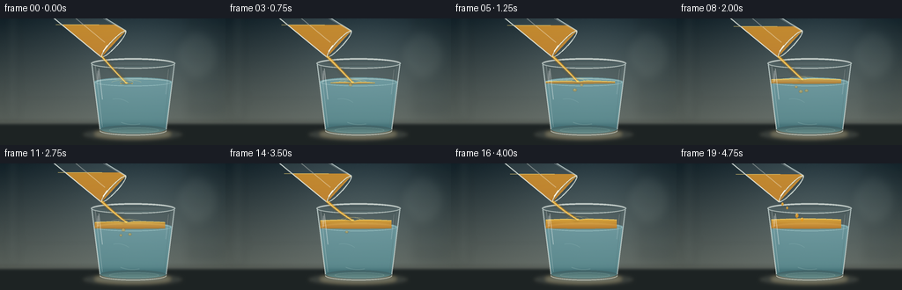
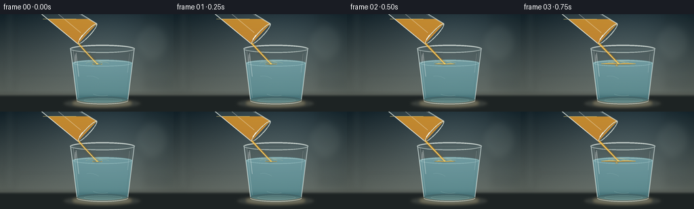

CODING AGENTS AS PIXEL WORLD MODELS
traex/GPT-5.6-Sol · phygen_136
点击播放 · 原生 RGB 像素
逐轮保存的候选
回放视频、检查图与代码变化。
每份候选均可单独播放。实际图片检查记录在下方工具轨迹中。
候选 01播放与检查图
点击播放 · 原生 RGB 像素


展开代码变化
--- 上一保存版本
+++ 本次保存版本
@@ -0,0 +1,358 @@
+#!/usr/bin/env python3
+"""Procedurally render a gentle pour of golden oil into a water glass.
+
+The renderer is deterministic and uses only Pillow/NumPy. It works at 4x
+resolution and downsamples, preserving delicate glass edges and highlights.
+"""
+from pathlib import Path
+import math
+import numpy as np
+from PIL import Image, ImageDraw, ImageFilter
+import artifact_io
+
+W, H, N, SCALE = 256, 144, 20, 4
+SW, SH = W * SCALE, H * SCALE
+
+
+def q(v):
+ return int(round(v * SCALE))
+
+
+def box(b):
+ return tuple(q(x) for x in b)
+
+
+def pts(p):
+ return [(q(x), q(y)) for x, y in p]
+
+
+def smoothstep(a, b, x):
+ if b == a:
+ return float(x >= b)
+ z = max(0.0, min(1.0, (x-a)/(b-a)))
+ return z*z*(3-2*z)
+
+
+def curve_points(p0, p1, p2, count=40):
+ out=[]
+ for u in np.linspace(0, 1, count):
+ v=1-u
+ out.append((v*v*p0[0]+2*v*u*p1[0]+u*u*p2[0],
+ v*v*p0[1]+2*v*u*p1[1]+u*u*p2[1]))
+ return out
+
+
+def rgba_layer():
+ return Image.new('RGBA', (SW, SH), (0,0,0,0))
+
+
+def composite_color(base, mask, top, bottom=None, alpha=255):
+ """Paste a vertical color gradient through an L mask."""
+ if bottom is None: bottom = top
+ arr=np.empty((SH, SW, 4), dtype=np.uint8)
+ for y in range(SH):
+ f=y/max(1, SH-1)
+ arr[y,:,0]=round(top[0]*(1-f)+bottom[0]*f)
+ arr[y,:,1]=round(top[1]*(1-f)+bottom[1]*f)
+ arr[y,:,2]=round(top[2]*(1-f)+bottom[2]*f)
+ arr[y,:,3]=alpha
+ lay=Image.fromarray(arr, 'RGBA')
+ lay.putalpha(Image.fromarray((np.asarray(mask,dtype=np.float32)*(alpha/255)).astype(np.uint8)))
+ return Image.alpha_composite(base, lay)
+
+
+def ellipse_poly(cx, cy, rx, ry, angle, n=64):
+ ca,sa=math.cos(angle),math.sin(angle)
+ out=[]
+ for a in np.linspace(0,2*math.pi,n,endpoint=False):
+ x,y=rx*math.cos(a),ry*math.sin(a)
+ out.append((cx+x*ca-y*sa, cy+x*sa+y*ca))
+ return out
+
+
+def make_background(frame_i):
+ # Cool kitchen/window backdrop, deliberately defocused to keep attention on liquids.
+ yy,xx=np.mgrid[0:SH,0:SW]
+ y=yy/SCALE; x=xx/SCALE
+ top=np.array([31,46,53.],float); bot=np.array([105,112,105.],float)
+ f=np.clip(y/126,0,1)[...,None]
+ arr=top*(1-f)+bot*f
+ # Broad window glow and edge vignette.
+ glow=np.exp(-(((x-166)/82)**2+((y-42)/69)**2))*22
+ arr += glow[...,None]*np.array([0.75,0.9,0.92])
+ vign=np.clip(((x-128)/150)**2+((y-70)/115)**2,0,1)*14
+ arr -= vign[...,None]
+ # Extremely subtle grain: stable, so it does not flicker.
+ rng=np.random.default_rng(136)
+ grain=rng.normal(0,0.85,(SH,SW,1))
+ arr=np.clip(arr+grain,0,255).astype(np.uint8)
+ im=Image.fromarray(arr,'RGB').convert('RGBA')
+ # Out-of-focus vertical window/tile forms.
+ blur=rgba_layer(); d=ImageDraw.Draw(blur,'RGBA')
+ d.rectangle(box((10,0,17,115)), fill=(188,205,199,22))
+ d.rectangle(box((18,0,20,115)), fill=(10,24,29,34))
+ d.rectangle(box((215,0,219,112)), fill=(13,24,27,42))
+ d.rectangle(box((222,0,254,112)), fill=(17,30,34,24))
+ d.line(pts([(0,91),(256,89)]), fill=(207,219,209,20), width=q(1.2))
+ d.ellipse(box((198,18,244,65)), fill=(219,229,210,14))
+ blur=blur.filter(ImageFilter.GaussianBlur(q(5)))
+ return Image.alpha_composite(im,blur)
+
+
+def draw_counter(im):
+ layer=rgba_layer(); d=ImageDraw.Draw(layer,'RGBA')
+ d.rectangle(box((0,116,256,144)), fill=(29,35,35,255))
+ d.rectangle(box((0,116,256,118)), fill=(154,159,145,30))
+ # Glass shadow and faint warm reflection.
+ d.ellipse(box((93,124,208,140)), fill=(2,5,6,115))
+ d.ellipse(box((107,127,194,136)), fill=(165,112,28,16))
+ layer=layer.filter(ImageFilter.GaussianBlur(q(2.0)))
+ return Image.alpha_composite(im,layer)
+
+
+def receiving_glass(im, fi):
+ t=fi/(N-1)
+ growth=smoothstep(0.01,0.92,t)
+ spread=smoothstep(0.02,0.30,t)
+ impact_x=143.5+0.8*math.sin(fi*.55)
+ interface=73.4
+ top_y=interface-(0.8+9.8*growth)
+
+ # Almost invisible body tint preserves the transparent-glass read.
+ tint=rgba_layer(); dt=ImageDraw.Draw(tint,'RGBA')
+ body=[(104,50),(198,50),(189,129),(114,129)]
+ dt.polygon(pts(body), fill=(203,230,229,16))
+ dt.polygon(pts([(109,53),(194,53),(187,126),(116,126)]), fill=(95,136,143,9))
+ im=Image.alpha_composite(im,tint)
+
+ # Water body. The ellipse at top gives a transparent, horizontal surface.
+ wm=Image.new('L',(SW,SH),0); dw=ImageDraw.Draw(wm)
+ dw.polygon(pts([(107,72),(195,72),(188,127),(114,127)]),fill=178)
+ dw.ellipse(box((107,67,195,77)),fill=184)
+ dw.ellipse(box((114,121,188,131)),fill=150)
+ # A restrained blue-green water color, still showing the background.
+ water=rgba_layer()
+ wa=np.zeros((SH,SW,4),dtype=np.uint8)
+ ypix=np.arange(SH)[:,None]/SCALE
+ f=np.clip((ypix-68)/62,0,1)
+ wa[:,:,0]=(122*(1-f)+80*f).astype(np.uint8)
+ wa[:,:,1]=(176*(1-f)+142*f).astype(np.uint8)
+ wa[:,:,2]=(184*(1-f)+151*f).astype(np.uint8)
+ wa[:,:,3]=np.asarray(wm)
+ water=Image.fromarray(wa,'RGBA')
+ im=Image.alpha_composite(im,water)
+
+ # Slight refractive bright band along the far water surface.
+ surf=rgba_layer(); ds=ImageDraw.Draw(surf,'RGBA')
+ ds.ellipse(box((108,68,194,77)), outline=(204,238,234,105), width=q(.75))
+ ds.arc(box((109,68.5,194,76)), 185, 354, fill=(245,251,238,92), width=q(.65))
+ im=Image.alpha_composite(im,surf)
+
+ # Oil pool/layer: initially a lens at the impact point, then spreads across the surface.
+ half=7.0+37.0*spread
+ left=max(107.5,impact_x-half); right=min(194.5,impact_x+half)
+ # Curved top with a tiny impact dimple directly below the stream.
+ xs=np.linspace(left,right,80)
+ denom=max(half,1)
+ edge=((xs-(left+right)/2)/denom)**2
+ dimple=1.25*(1-smoothstep(.78,1,t))*np.exp(-((xs-impact_x)/5.5)**2)
+ top_curve=top_y + 1.2*edge + dimple
+ bot_curve=interface + .55*(1-edge)
+ pool=list(zip(xs,top_curve))+list(zip(xs[::-1],bot_curve[::-1]))
+ om=Image.new('L',(SW,SH),0); do=ImageDraw.Draw(om)
+ do.polygon(pts(pool),fill=int(170+45*growth))
+ oa=np.zeros((SH,SW,4),dtype=np.uint8)
+ py=np.arange(SH)[:,None]/SCALE
+ local=np.clip((py-top_y)/max(2,interface-top_y),0,1)
+ oa[:,:,0]=(238-36*local).astype(np.uint8)
+ oa[:,:,1]=(178-56*local).astype(np.uint8)
+ oa[:,:,2]=(55-25*local).astype(np.uint8)
+ oa[:,:,3]=np.asarray(om)
+ im=Image.alpha_composite(im,Image.fromarray(oa,'RGBA'))
+
+ oilhi=rgba_layer(); dh=ImageDraw.Draw(oilhi,'RGBA')
+ top_line=list(zip(xs,top_curve))
+ dh.line(pts(top_line), fill=(255,226,119,190), width=q(.85))
+ # Lower amber boundary makes non-mixing visually explicit.
+ dh.line(pts(list(zip(xs,bot_curve))), fill=(153,101,19,130), width=q(.65))
+ # Expanding surface ripples around the gentle impact.
+ ripple_strength=int(105*(1-smoothstep(.78,1,t)))
+ for k in range(2):
+ rr=8+7*k+2.3*math.sin(fi*.65+k)
+ dh.arc(box((impact_x-rr, top_y-2.5-k*.4, impact_x+rr, top_y+3.0+k*.4)), 187, 352,
+ fill=(255,235,151,max(0,ripple_strength-25*k)), width=q(.55))
+ im=Image.alpha_composite(im,oilhi)
+
+ # A few rounded oil beads pushed just under the interface by the stream; they
+ # stay shallow and rise again, emphasizing that oil floats rather than mixes.
+ if 3 <= fi <= 16:
+ beads=rgba_layer(); db=ImageDraw.Draw(beads,'RGBA')
+ for j in range(3):
+ age=(fi-(3+j*2))
+ if 0 <= age <= 8:
+ bx=impact_x+(-1 if j%2==0 else 1)*(2.5+j*2)+math.sin(fi+j)*.8
+ by=75.5 + 8*math.sin(min(age,8)/8*math.pi)*(1-.12*j)
+ r=2.2-0.25*j
+ db.ellipse(box((bx-r,by-r*.8,bx+r,by+r*.8)),fill=(225,160,43,115))
+ db.ellipse(box((bx-r*.35,by-r*.55,bx+r*.05,by-r*.12)),fill=(255,237,164,125))
+ beads=beads.filter(ImageFilter.GaussianBlur(q(.25)))
+ im=Image.alpha_composite(im,beads)
+
+ # Refractive caustics within the water.
+ ca=rgba_layer(); dc=ImageDraw.Draw(ca,'RGBA')
+ sway=math.sin(fi*.35)
+ dc.arc(box((122+sway,77,180+sway,121)), 74, 118, fill=(216,242,231,36), width=q(1.0))
+ dc.arc(box((112-sway,91,153-sway,128)), 257, 310, fill=(213,240,234,28), width=q(.8))
+ dc.ellipse(box((124,124,180,130)), outline=(221,240,225,46), width=q(.7))
+ im=Image.alpha_composite(im,ca)
+
+ # Strong but thin glass edges and layered rim highlights.
+ gl=rgba_layer(); dg=ImageDraw.Draw(gl,'RGBA')
+ dg.ellipse(box((103,45,199,57)), outline=(228,240,234,165), width=q(1.25))
+ dg.ellipse(box((106,47,196,55)), outline=(103,135,138,92), width=q(.7))
+ dg.arc(box((104,46,198,57)), 186, 352, fill=(255,255,248,218), width=q(.8))
+ dg.line(pts([(104,51),(113.5,127)]),fill=(226,242,238,170),width=q(1.15))
+ dg.line(pts([(198,51),(188.5,127)]),fill=(225,240,237,157),width=q(1.15))
+ dg.line(pts([(108,54),(116,123)]),fill=(255,255,252,82),width=q(.55))
+ dg.line(pts([(194,54),(186,123)]),fill=(83,112,115,70),width=q(.65))
+ dg.arc(box((113,122,189,133)), 0, 180, fill=(234,246,237,165), width=q(1.1))
+ dg.arc(box((113,122,189,132)), 180, 360, fill=(70,92,92,120), width=q(.9))
+ # Vertical specular streaks.
+ dg.line(pts([(112,57),(116,92)]),fill=(255,255,252,92),width=q(.9))
+ dg.line(pts([(191,58),(188,86)]),fill=(255,255,250,63),width=q(.55))
+ dg.ellipse(box((110.2,59,112,72)),fill=(255,255,255,75))
+ im=Image.alpha_composite(im,gl)
+ return im, top_y, impact_x
+
+
+def source_glass(im, fi):
+ t=fi/(N-1)
+ # The vessel very gently rotates back near the end, while remaining visibly tilted.
+ dx=1.2*smoothstep(.82,1,t)
+ M=(129+dx,29-dx*.25)
+ angle=math.radians(133) # major axis of the oval rim
+ # Outer silhouette: rim endpoints to tapered base, extending partly off frame.
+ rim=ellipse_poly(M[0],M[1],20.5,4.2,angle)
+ ca,sa=math.cos(angle),math.sin(angle)
+ e1=(M[0]+20.5*ca,M[1]+20.5*sa) # low-left lip
+ e2=(M[0]-20.5*ca,M[1]-20.5*sa)
+ base_c=(67+dx,-15-dx*.2)
+ baseang=angle
+ b1=(base_c[0]+15*ca,base_c[1]+15*sa)
+ b2=(base_c[0]-15*ca,base_c[1]-15*sa)
+ interior=[e1,e2,b2,b1]
+
+ # Clear body tint.
+ body=rgba_layer(); db=ImageDraw.Draw(body,'RGBA')
+ db.polygon(pts(interior),fill=(210,231,224,24))
+ im=Image.alpha_composite(im,body)
+
+ # Oil occupies the gravity-low part of the tilted glass. Intersection with a
+ # horizontal half-plane gives a physically legible free surface.
+ mask=Image.new('L',(SW,SH),0); dm=ImageDraw.Draw(mask)
+ dm.polygon(pts(interior),fill=205)
+ cutoff=7.0+5.2*smoothstep(.05,.95,t) # source level falls during pouring
+ half=Image.new('L',(SW,SH),0); dh=ImageDraw.Draw(half)
+ dh.rectangle(box((-2,cutoff,258,100)),fill=255)
+ inter=np.minimum(np.asarray(mask),np.asarray(half)).astype(np.uint8)
+ oil=np.zeros((SH,SW,4),dtype=np.uint8)
+ yy=np.arange(SH)[:,None]/SCALE
+ oil[:,:,0]=np.clip(230-0.28*yy,0,255).astype(np.uint8)
+ oil[:,:,1]=np.clip(157-0.40*yy,0,255).astype(np.uint8)
+ oil[:,:,2]=np.clip(41-0.08*yy,0,255).astype(np.uint8)
+ oil[:,:,3]=inter
+ im=Image.alpha_composite(im,Image.fromarray(oil,'RGBA'))
+
+ # Oil's horizontal surface in the source glass.
+ shine=rgba_layer(); ds=ImageDraw.Draw(shine,'RGBA')
+ # Segment clipped approximately to the body at this y.
+ xleft=58+cutoff*.75; xright=105+cutoff*1.05
+ ds.line(pts([(xleft,cutoff),(xright,cutoff)]),fill=(255,223,118,145),width=q(.75))
+ # Source glass edges and rim.
+ ds.line(pts([e1,b1]),fill=(242,249,242,188),width=q(1.25))
+ ds.line(pts([e2,b2]),fill=(224,240,237,164),width=q(1.15))
+ ds.line(pts([(e2[0]-2,e2[1]),(b2[0]-1,b2[1]+2)]),fill=(255,255,250,76),width=q(.6))
+ ds.line(pts([b1,b2]),fill=(232,245,236,120),width=q(1.0))
+ ds.polygon(pts(rim),outline=(235,244,236,205),width=q(1.15))
+ # Dark inner rim plus brilliant lower lip.
+ inner=ellipse_poly(M[0],M[1],18.2,2.7,angle)
+ ds.line(pts(inner+[inner[0]]),fill=(91,109,106,105),width=q(.65))
+ ds.arc(box((0,0,1,1)),0,0) # keep Pillow versions consistent
+ ds.line(pts([rim[8],rim[9],rim[10],rim[11],rim[12],rim[13]]),fill=(255,255,247,235),width=q(1.0))
+ # Long reflected window highlight.
+ ds.line(pts([(84,-2),(119,27)]),fill=(255,255,245,82),width=q(1.0))
+ im=Image.alpha_composite(im,shine)
+ return im, e1
+
+
+def oil_stream(im, fi, start, end_y, impact_x):
+ t=fi/(N-1)
+ # Flow ramps in quickly, then gently tapers into droplets at the end.
+ ramp=smoothstep(0,.08,t)
+ tail=1-smoothstep(.82,1.0,t)
+ flow=ramp*tail
+ x0,y0=start[0]+.3,start[1]-1
+ x2=impact_x; y2=end_y+1.0
+ x1=(x0+x2)/2+1.8*math.sin(fi*.32); y1=(y0+y2)/2+1.0
+ center=curve_points((x0,y0),(x1,y1),(x2,y2),70)
+
+ layer=rgba_layer(); d=ImageDraw.Draw(layer,'RGBA')
+ # Broken flow at the end is represented by several descending beads.
+ if t < .86:
+ widths=[]
+ left=[]; right=[]
+ for k,(x,y) in enumerate(center):
+ u=k/(len(center)-1)
+ w=(2.65*(1-u)+1.65*u)*(0.72+0.28*flow)
+ if 0<k<len(center)-1:
+ tx=center[k+1][0]-center[k-1][0]; ty=center[k+1][1]-center[k-1][1]
+ else: tx,ty=1,5
+ ln=max(.001,math.hypot(tx,ty)); nx=-ty/ln; ny=tx/ln
+ left.append((x+nx*w/2,y+ny*w/2)); right.append((x-nx*w/2,y-ny*w/2))
+ stream_poly=left+right[::-1]
+ glow=rgba_layer(); gd=ImageDraw.Draw(glow,'RGBA')
+ gd.line(pts(center),fill=(255,181,44,85),width=q(4.2))
+ glow=glow.filter(ImageFilter.GaussianBlur(q(1.5)))
+ im=Image.alpha_composite(im,glow)
+ d.polygon(pts(stream_poly),fill=(224,151,31,228))
+ d.line(pts(center),fill=(255,211,91,230),width=q(.65))
+ hi=[(x-.55,y) for x,y in center]
+ d.line(pts(hi),fill=(255,239,171,175),width=q(.38))
+ else:
+ phase=(t-.86)/.14
+ # Four beads follow the old stream path and shrink as the pour ends.
+ for j in range(4):
+ u=(phase*.78+j*.21)%1.05
+ if u<=1:
+ idx=min(len(center)-1,int(u*(len(center)-1)))
+ x,y=center[idx]
+ r=max(.7,1.65-.18*j)
+ d.ellipse(box((x-r,y-r*1.45,x+r,y+r*1.45)),fill=(226,151,31,225))
+ d.ellipse(box((x-r*.45,y-r,x,y-r*.2)),fill=(255,231,145,205))
+ im=Image.alpha_composite(im,layer)
+ return im
+
+
+def render(fi):
+ im=make_background(fi)
+ im=draw_counter(im)
+ im,oil_top,impact=receiving_glass(im,fi)
+ # Source vessel goes behind its falling stream; stream starts exactly at low lip.
+ im,lip=source_glass(im,fi)
+ im=oil_stream(im,fi,lip,oil_top,impact)
+ # A tiny bright contact bead at the impact point.
+ if fi < 18:
+ contact=rgba_layer(); d=ImageDraw.Draw(contact,'RGBA')
+ d.ellipse(box((impact-1.6,oil_top-.3,impact+1.6,oil_top+1.4)),fill=(255,224,111,155))
+ im=Image.alpha_composite(im,contact)
+ im=im.convert('RGB').resize((W,H),Image.Resampling.LANCZOS)
+ return np.asarray(im,dtype=np.uint8)
+
+
+def main():
+ frames=np.stack([render(i) for i in range(N)],axis=0)
+ artifact_io.save(frames,Path(__file__).resolve().parent)
+ print('saved',frames.shape,frames.dtype,'range',frames.min(),frames.max())
+
+if __name__=='__main__':
+ main()
可观测工具轨迹
实际执行的命令与返回图片。
命令 1exit 0
/bin/bash -lc "cat prompt.txt && printf '\\n--- GENERATION_RULES.md ---\\n' && cat GENERATION_RULES.md"
命令 2exit 0
/bin/bash -lc "cat task_spec.json && printf '\\n--- FILES ---\\n' && find . -maxdepth 3 -type f -printf '%p\\n' | sort"
命令 3exit 0
/bin/bash -lc "command -v ffmpeg; command -v blender; command -v python3; python3 - <<'PY' mods=['PIL','numpy','cv2','imageio','moviepy','cairo'] for m in mods: try: x=__import__(m); print(m,'OK',getattr(x,'__version__','')) except Exception as e: print(m,'NO',type(e).__name__) PY"
命令 4exit 0
/bin/bash -lc 'cat artifact_io.py'
命令 5exit 0
/bin/bash -lc "cat > generate.py <<'PY'
#"'!/usr/bin/env python3
"""Procedurally render a gentle pour of golden oil into a water glass.
The renderer is deterministic and uses only Pillow/NumPy. It works at 4x
resolution and downsamples, preserving delicate glass edges and highlights.
"""
from pathlib import Path
import math
import numpy as np
from PIL import Image, ImageDraw, ImageFilter
import artifact_io
W, H, N, SCALE = 256, 144, 20, 4
SW, SH = W * SCALE, H * SCALE
def q(v):
return int(round(v * SCALE))
def box(b):
return tuple(q(x) for x in b)
def pts(p):
return [(q(x), q(y)) for x, y in p]
def smoothstep(a, b, x):
if b == a:
return float(x >= b)
z = max(0.0, min(1.0, (x-a)/(b-a)))
return z*z*(3-2*z)
def curve_points(p0, p1, p2, count=40):
out=[]
for u in np.linspace(0, 1, count):
v=1-u
out.append((v*v*p0[0]+2*v*u*p1[0]+u*u*p2[0],
v*v*p0[1]+2*v*u*p1[1]+u*u*p2[1]))
return out
def rgba_layer():
return Image.new('"'RGBA', (SW, SH), (0,0,0,0))
def composite_color(base, mask, top, bottom=None, alpha=255):
\"\"\"Paste a vertical color gradient through an L mask.\"\"\"
if bottom is None: bottom = top
arr=np.empty((SH, SW, 4), dtype=np.uint8)
for y in range(SH):
f=y/max(1, SH-1)
arr[y,:,0]=round(top[0]*(1-f)+bottom[0]*f)
arr[y,:,1]=round(top[1]*(1-f)+bottom[1]*f)
arr[y,:,2]=round(top[2]*(1-f)+bottom[2]*f)
arr[y,:,3]=alpha
lay=Image.fromarray(arr, 'RGBA')
lay.putalpha(Image.fromarray((np.asarray(mask,dtype=np.float32)*(alpha/255)).astype(np.uint8)))
return Image.alpha_composite(base, lay)
def ellipse_poly(cx, cy, rx, ry, angle, n=64):
ca,sa=math.cos(angle),math.sin(angle)
out=[]
for a in np.linspace(0,2*math.pi,n,endpoint=False):
x,y=rx*math.cos(a),ry*math.sin(a)
out.append((cx+x*ca-y*sa, cy+x*sa+y*ca))
return out
def make_background(frame_i):
# Cool kitchen/window backdrop, deliberately defocused to keep attention on liquids.
yy,xx=np.mgrid[0:SH,0:SW]
y=yy/SCALE; x=xx/SCALE
top=np.array([31,46,53.],float); bot=np.array([105,112,105.],float)
f=np.clip(y/126,0,1)[...,None]
arr=top*(1-f)+bot*f
# Broad window glow and edge vignette.
glow=np.exp(-(((x-166)/82)**2+((y-42)/69)**2))*22
arr += glow[...,None]*np.array([0.75,0.9,0.92])
vign=np.clip(((x-128)/150)**2+((y-70)/115)**2,0,1)*14
arr -= vign[...,None]
# Extremely subtle grain: stable, so it does not flicker.
rng=np.random.default_rng(136)
grain=rng.normal(0,0.85,(SH,SW,1))
arr=np.clip(arr+grain,0,255).astype(np.uint8)
im=Image.fromarray(arr,'RGB').convert('RGBA')
# Out-of-focus vertical window/tile forms.
blur=rgba_layer(); d=ImageDraw.Draw(blur,'RGBA')
d.rectangle(box((10,0,17,115)), fill=(188,205,199,22))
d.rectangle(box((18,0,20,115)), fill=(10,24,29,34))
d.rectangle(box((215,0,219,112)), fill=(13,24,27,42))
d.rectangle(box((222,0,254,112)), fill=(17,30,34,24))
d.line(pts([(0,91),(256,89)]), fill=(207,219,209,20), width=q(1.2))
d.ellipse(box((198,18,244,65)), fill=(219,229,210,14))
blur=blur.filter(ImageFilter.GaussianBlur(q(5)))
return Image.alpha_composite(im,blur)
def draw_counter(im):
layer=rgba_layer(); d=ImageDraw.Draw(layer,'RGBA')
d.rectangle(box((0,116,256,144)), fill=(29,35,35,255))
d.rectangle(box((0,116,256,118)), fill=(154,159,145,30))
# Glass shadow and faint warm reflection.
d.ellipse(box((93,124,208,140)), fill=(2,5,6,115))
d.ellipse(box((107,127,194,136)), fill=(165,112,28,16))
layer=layer.filter(ImageFilter.GaussianBlur(q(2.0)))
return Image.alpha_composite(im,layer)
def receiving_glass(im, fi):
t=fi/(N-1)
growth=smoothstep(0.01,0.92,t)
spread=smoothstep(0.02,0.30,t)
impact_x=143.5+0.8*math.sin(fi*.55)
interface=73.4
top_y=interface-(0.8+9.8*growth)
# Almost invisible body tint preserves the transparent-glass read.
tint=rgba_layer(); dt=ImageDraw.Draw(tint,'RGBA')
body=[(104,50),(198,50),(189,129),(114,129)]
dt.polygon(pts(body), fill=(203,230,229,16))
dt.polygon(pts([(109,53),(194,53),(187,126),(116,126)]), fill=(95,136,143,9))
im=Image.alpha_composite(im,tint)
# Water body. The ellipse at top gives a transparent, horizontal surface.
wm=Image.new('L',(SW,SH),0); dw=ImageDraw.Draw(wm)
dw.polygon(pts([(107,72),(195,72),(188,127),(114,127)]),fill=178)
dw.ellipse(box((107,67,195,77)),fill=184)
dw.ellipse(box((114,121,188,131)),fill=150)
# A restrained blue-green water color, still showing the background.
water=rgba_layer()
wa=np.zeros((SH,SW,4),dtype=np.uint8)
ypix=np.arange(SH)[:,None]/SCALE
f=np.clip((ypix-68)/62,0,1)
wa[:,:,0]=(122*(1-f)+80*f).astype(np.uint8)
wa[:,:,1]=(176*(1-f)+142*f).astype(np.uint8)
wa[:,:,2]=(184*(1-f)+151*f).astype(np.uint8)
wa[:,:,3]=np.asarray(wm)
water=Image.fromarray(wa,'RGBA')
im=Image.alpha_composite(im,water)
# Slight refractive bright band along the far water surface.
surf=rgba_layer(); ds=ImageDraw.Draw(surf,'RGBA')
ds.ellipse(box((108,68,194,77)), outline=(204,238,234,105), width=q(.75))
ds.arc(box((109,68.5,194,76)), 185, 354, fill=(245,251,238,92), width=q(.65))
im=Image.alpha_composite(im,surf)
# Oil pool/layer: initially a lens at the impact point, then spreads across the surface.
half=7.0+37.0*spread
left=max(107.5,impact_x-half); right=min(194.5,impact_x+half)
# Curved top with a tiny impact dimple directly below the stream.
xs=np.linspace(left,right,80)
denom=max(half,1)
edge=((xs-(left+right)/2)/denom)**2
dimple=1.25*(1-smoothstep(.78,1,t))*np.exp(-((xs-impact_x)/5.5)**2)
top_curve=top_y + 1.2*edge + dimple
bot_curve=interface + .55*(1-edge)
pool=list(zip(xs,top_curve))+list(zip(xs[::-1],bot_curve[::-1]))
om=Image.new('L',(SW,SH),0); do=ImageDraw.Draw(om)
do.polygon(pts(pool),fill=int(170+45*growth))
oa=np.zeros((SH,SW,4),dtype=np.uint8)
py=np.arange(SH)[:,None]/SCALE
local=np.clip((py-top_y)/max(2,interface-top_y),0,1)
oa[:,:,0]=(238-36*local).astype(np.uint8)
oa[:,:,1]=(178-56*local).astype(np.uint8)
oa[:,:,2]=(55-25*local).astype(np.uint8)
oa[:,:,3]=np.asarray(om)
im=Image.alpha_composite(im,Image.fromarray(oa,'RGBA'))
oilhi=rgba_layer(); dh=ImageDraw.Draw(oilhi,'RGBA')
top_line=list(zip(xs,top_curve))
dh.line(pts(top_line), fill=(255,226,119,190), width=q(.85))
# Lower amber boundary makes non-mixing visually explicit.
dh.line(pts(list(zip(xs,bot_curve))), fill=(153,101,19,130), width=q(.65))
# Expanding surface ripples around the gentle impact.
ripple_strength=int(105*(1-smoothstep(.78,1,t)))
for k in range(2):
rr=8+7*k+2.3*math.sin(fi*.65+k)
dh.arc(box((impact_x-rr, top_y-2.5-k*.4, impact_x+rr, top_y+3.0+k*.4)), 187, 352,
fill=(255,235,151,max(0,ripple_strength-25*k)), width=q(.55))
im=Image.alpha_composite(im,oilhi)
# A few rounded oil beads pushed just under the interface by the stream; they
# stay shallow and rise again, emphasizing that oil floats rather than mixes.
if 3 <= fi <= 16:
beads=rgba_layer(); db=ImageDraw.Draw(beads,'RGBA')
for j in range(3):
age=(fi-(3+j*2))
if 0 <= age <= 8:
bx=impact_x+(-1 if j%2==0 else 1)*(2.5+j*2)+math.sin(fi+j)*.8
by=75.5 + 8*math.sin(min(age,8)/8*math.pi)*(1-.12*j)
r=2.2-0.25*j
db.ellipse(box((bx-r,by-r*.8,bx+r,by+r*.8)),fill=(225,160,43,115))
db.ellipse(box((bx-r*.35,by-r*.55,bx+r*.05,by-r*.12)),fill=(255,237,164,125))
beads=beads.filter(ImageFilter.GaussianBlur(q(.25)))
im=Image.alpha_composite(im,beads)
# Refractive caustics within the water.
ca=rgba_layer(); dc=ImageDraw.Draw(ca,'RGBA')
sway=math.sin(fi*.35)
dc.arc(box((122+sway,77,180+sway,121)), 74, 118, fill=(216,242,231,36), width=q(1.0))
dc.arc(box((112-sway,91,153-sway,128)), 257, 310, fill=(213,240,234,28), width=q(.8))
dc.ellipse(box((124,124,180,130)), outline=(221,240,225,46), width=q(.7))
im=Image.alpha_composite(im,ca)
# Strong but thin glass edges and layered rim highlights.
gl=rgba_layer(); dg=ImageDraw.Draw(gl,'RGBA')
dg.ellipse(box((103,45,199,57)), outline=(228,240,234,165), width=q(1.25))
dg.ellipse(box((106,47,196,55)), outline=(103,135,138,92), width=q(.7))
dg.arc(box((104,46,198,57)), 186, 352, fill=(255,255,248,218), width=q(.8))
dg.line(pts([(104,51),(113.5,127)]),fill=(226,242,238,170),width=q(1.15))
dg.line(pts([(198,51),(188.5,127)]),fill=(225,240,237,157),width=q(1.15))
dg.line(pts([(108,54),(116,123)]),fill=(255,255,252,82),width=q(.55))
dg.line(pts([(194,54),(186,123)]),fill=(83,112,115,70),width=q(.65))
dg.arc(box((113,122,189,133)), 0, 180, fill=(234,246,237,165), width=q(1.1))
dg.arc(box((113,122,189,132)), 180, 360, fill=(70,92,92,120), width=q(.9))
# Vertical specular streaks.
dg.line(pts([(112,57),(116,92)]),fill=(255,255,252,92),width=q(.9))
dg.line(pts([(191,58),(188,86)]),fill=(255,255,250,63),width=q(.55))
dg.ellipse(box((110.2,59,112,72)),fill=(255,255,255,75))
im=Image.alpha_composite(im,gl)
return im, top_y, impact_x
def source_glass(im, fi):
t=fi/(N-1)
# The vessel very gently rotates back near the end, while remaining visibly tilted.
dx=1.2*smoothstep(.82,1,t)
M=(129+dx,29-dx*.25)
angle=math.radians(133) # major axis of the oval rim
# Outer silhouette: rim endpoints to tapered base, extending partly off frame.
rim=ellipse_poly(M[0],M[1],20.5,4.2,angle)
ca,sa=math.cos(angle),math.sin(angle)
e1=(M[0]+20.5*ca,M[1]+20.5*sa) # low-left lip
e2=(M[0]-20.5*ca,M[1]-20.5*sa)
base_c=(67+dx,-15-dx*.2)
baseang=angle
b1=(base_c[0]+15*ca,base_c[1]+15*sa)
b2=(base_c[0]-15*ca,base_c[1]-15*sa)
interior=[e1,e2,b2,b1]
# Clear body tint.
body=rgba_layer(); db=ImageDraw.Draw(body,'RGBA')
db.polygon(pts(interior),fill=(210,231,224,24))
im=Image.alpha_composite(im,body)
# Oil occupies the gravity-low part of the tilted glass. Intersection with a
# horizontal half-plane gives a physically legible free surface.
mask=Image.new('L',(SW,SH),0); dm=ImageDraw.Draw(mask)
dm.polygon(pts(interior),fill=205)
cutoff=7.0+5.2*smoothstep(.05,.95,t) # source level falls during pouring
half=Image.new('L',(SW,SH),0); dh=ImageDraw.Draw(half)
dh.rectangle(box((-2,cutoff,258,100)),fill=255)
inter=np.minimum(np.asarray(mask),np.asarray(half)).astype(np.uint8)
oil=np.zeros((SH,SW,4),dtype=np.uint8)
yy=np.arange(SH)[:,None]/SCALE
oil[:,:,0]=np.clip(230-0.28*yy,0,255).astype(np.uint8)
oil[:,:,1]=np.clip(157-0.40*yy,0,255).astype(np.uint8)
oil[:,:,2]=np.clip(41-0.08*yy,0,255).astype(np.uint8)
oil[:,:,3]=inter
im=Image.alpha_composite(im,Image.fromarray(oil,'RGBA'))
# Oil's horizontal surface in the source glass.
shine=rgba_layer(); ds=ImageDraw.Draw(shine,'RGBA')
# Segment clipped approximately to the body at this y.
xleft=58+cutoff*.75; xright=105+cutoff*1.05
ds.line(pts([(xleft,cutoff),(xright,cutoff)]),fill=(255,223,118,145),width=q(.75))
# Source glass edges and rim.
ds.line(pts([e1,b1]),fill=(242,249,242,188),width=q(1.25))
ds.line(pts([e2,b2]),fill=(224,240,237,164),width=q(1.15))
ds.line(pts([(e2[0]-2,e2[1]),(b2[0]-1,b2[1]+2)]),fill=(255,255,250,76),width=q(.6))
ds.line(pts([b1,b2]),fill=(232,245,236,120),width=q(1.0))
ds.polygon(pts(rim),outline=(235,244,236,205),width=q(1.15))
# Dark inner rim plus brilliant lower lip.
inner=ellipse_poly(M[0],M[1],18.2,2.7,angle)
ds.line(pts(inner+[inner[0]]),fill=(91,109,106,105),width=q(.65))
ds.arc(box((0,0,1,1)),0,0) # keep Pillow versions consistent
ds.line(pts([rim[8],rim[9],rim[10],rim[11],rim[12],rim[13]]),fill=(255,255,247,235),width=q(1.0))
# Long reflected window highlight.
ds.line(pts([(84,-2),(119,27)]),fill=(255,255,245,82),width=q(1.0))
im=Image.alpha_composite(im,shine)
return im, e1
def oil_stream(im, fi, start, end_y, impact_x):
t=fi/(N-1)
# Flow ramps in quickly, then gently tapers into droplets at the end.
ramp=smoothstep(0,.08,t)
tail=1-smoothstep(.82,1.0,t)
flow=ramp*tail
x0,y0=start[0]+.3,start[1]-1
x2=impact_x; y2=end_y+1.0
x1=(x0+x2)/2+1.8*math.sin(fi*.32); y1=(y0+y2)/2+1.0
center=curve_points((x0,y0),(x1,y1),(x2,y2),70)
layer=rgba_layer(); d=ImageDraw.Draw(layer,'RGBA')
# Broken flow at the end is represented by several descending beads.
if t < .86:
widths=[]
left=[]; right=[]
for k,(x,y) in enumerate(center):
u=k/(len(center)-1)
w=(2.65*(1-u)+1.65*u)*(0.72+0.28*flow)
if 0<k<len(center)-1:
tx=center[k+1][0]-center[k-1][0]; ty=center[k+1][1]-center[k-1][1]
else: tx,ty=1,5
ln=max(.001,math.hypot(tx,ty)); nx=-ty/ln; ny=tx/ln
left.append((x+nx*w/2,y+ny*w/2)); right.append((x-nx*w/2,y-ny*w/2))
stream_poly=left+right[::-1]
glow=rgba_layer(); gd=ImageDraw.Draw(glow,'RGBA')
gd.line(pts(center),fill=(255,181,44,85),width=q(4.2))
glow=glow.filter(ImageFilter.GaussianBlur(q(1.5)))
im=Image.alpha_composite(im,glow)
d.polygon(pts(stream_poly),fill=(224,151,31,228))
d.line(pts(center),fill=(255,211,91,230),width=q(.65))
hi=[(x-.55,y) for x,y in center]
d.line(pts(hi),fill=(255,239,171,175),width=q(.38))
else:
phase=(t-.86)/.14
# Four beads follow the old stream path and shrink as the pour ends.
for j in range(4):
u=(phase*.78+j*.21)%1.05
if u<=1:
idx=min(len(center)-1,int(u*(len(center)-1)))
x,y=center[idx]
r=max(.7,1.65-.18*j)
d.ellipse(box((x-r,y-r*1.45,x+r,y+r*1.45)),fill=(226,151,31,225))
d.ellipse(box((x-r*.45,y-r,x,y-r*.2)),fill=(255,231,145,205))
im=Image.alpha_composite(im,layer)
return im
def render(fi):
im=make_background(fi)
im=draw_counter(im)
im,oil_top,impact=receiving_glass(im,fi)
# Source vessel goes behind its falling stream; stream starts exactly at low lip.
im,lip=source_glass(im,fi)
im=oil_stream(im,fi,lip,oil_top,impact)
# A tiny bright contact bead at the impact point.
if fi < 18:
contact=rgba_layer(); d=ImageDraw.Draw(contact,'RGBA')
d.ellipse(box((impact-1.6,oil_top-.3,impact+1.6,oil_top+1.4)),fill=(255,224,111,155))
im=Image.alpha_composite(im,contact)
im=im.convert('RGB').resize((W,H),Image.Resampling.LANCZOS)
return np.asarray(im,dtype=np.uint8)
def main():
frames=np.stack([render(i) for i in range(N)],axis=0)
artifact_io.save(frames,Path(__file__).resolve().parent)
print('saved',frames.shape,frames.dtype,'range',frames.min(),frames.max())
if __name__=='__main__':
main()
PY
python3 generate.py
ls -lh pixels.npz inspection.png transition_check.png index.html frames/00.png frames/19.png"命令 6exit 0
/bin/bash -lc "python3 - <<'PY'
from pathlib import Path
import json, hashlib
import numpy as np
from PIL import Image
root=Path('.')
spec=json.loads((root/'task_spec.json').read_text())
files=sorted((root/'frames').glob('*.png'))
arr=np.stack([np.asarray(Image.open(p).convert('RGB')) for p in files])
print('frames:',len(files),'array:',arr.shape,arr.dtype)
print('spec:',spec['frames'],spec['height'],spec['width'],spec['fps'])
print('required:',{p:(root/p).exists() for p in ['generate.py','pixels.npz','index.html','inspection.png','transition_check.png']})
diffs=np.mean(np.abs(arr[1:].astype(np.int16)-arr[:-1].astype(np.int16)),axis=(1,2,3))
print('adjacent mean absolute changes:',np.round(diffs,3).tolist())
print('all frames unique:',len({hashlib.sha256(x.tobytes()).hexdigest() for x in arr})==len(arr))
with np.load(root/'pixels.npz') as d: print('packed tensor:',d['pixels'].shape,d['pixels'].dtype)
assert arr.shape==(20,144,256,3) and arr.dtype==np.uint8
assert np.all(diffs>0.02)
assert len(files)==20
print('VALIDATION_OK')
PY
sha256sum pixels.npz index.html inspection.png > .tmp/hashes_before
python3 generate.py >/tmp/regenerate.log 2>&1
sha256sum pixels.npz index.html inspection.png > .tmp/hashes_after
diff -u .tmp/hashes_before .tmp/hashes_after && cat /tmp/regenerate.log | tail -1"命令 7exit 0
/bin/bash -lc "sha256sum pixels.npz index.html inspection.png > .tmp/hashes_before
python3 generate.py > .tmp/regenerate.log 2>&1
sha256sum pixels.npz index.html inspection.png > .tmp/hashes_after
diff -u .tmp/hashes_before .tmp/hashes_after
cat .tmp/regenerate.log | tail -1
python3 - <<'PY'
from pathlib import Path
from PIL import Image
import numpy as np
for i in [0,3,7,11,15,19]:
a=np.asarray(Image.open(f'frames/{i:02d}.png'))
print(i, tuple(np.round(a.mean((0,1)),1)), int(a.min()), int(a.max()))
print('html bytes',Path('index.html').stat().st_size)
PY"保存候选 1 份；完成命令 7 次；可验证图片返回 0 张。原始 API 响应与完整日志保留在本地。